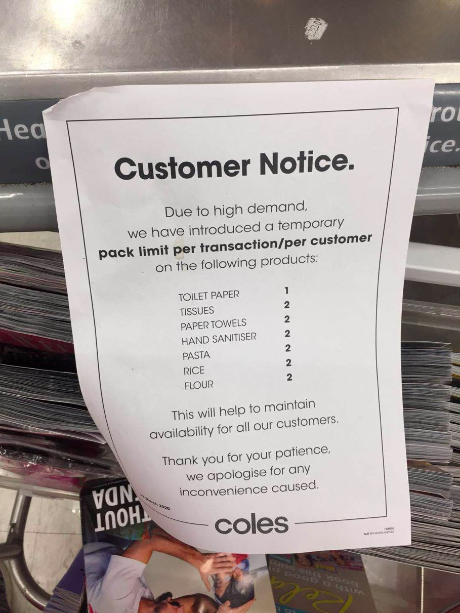
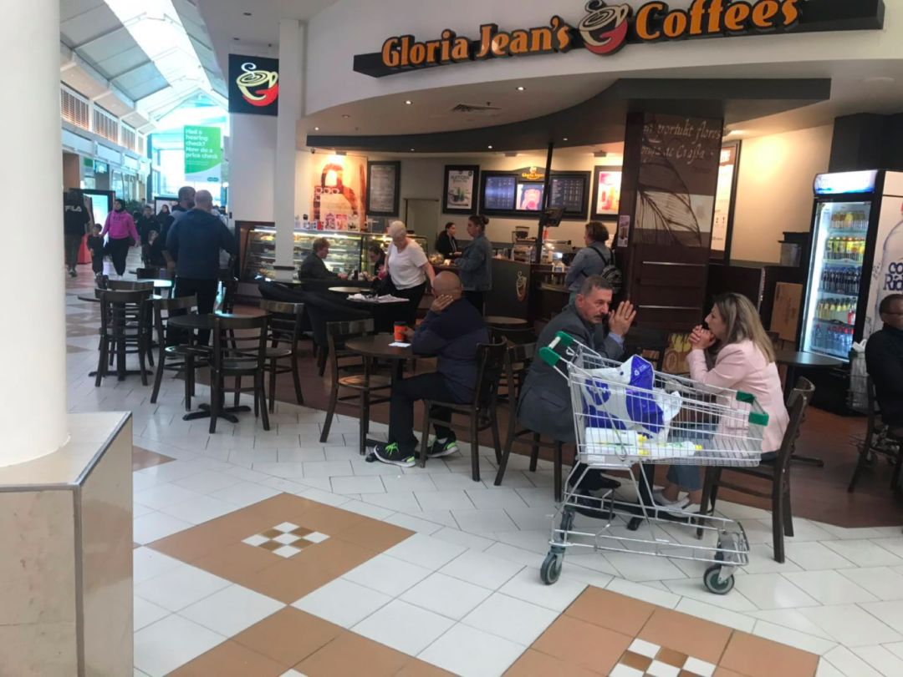
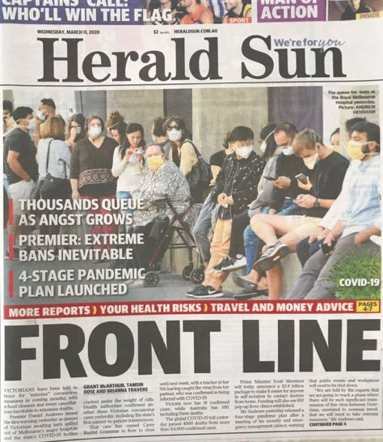

疫情下的省思 | 周雪光：来自社会学家的疫情观察（1）
原文链接 备份链接 导言 岁末年初以来，新冠肺炎疫情蔓延全国。医护人员冲锋在前，病人的生死、同胞的安危，无不牵动着我们的心。近期，我们将陆续推出一系列文章、笔谈，围绕和此次疫情以及历史上类似公共危机相关的政治、经济、法律、文化的复杂成因及 …
在疫情爆发前，澳大利亚人宁愿用贵一点的本国厕纸，也不会考虑中国品牌的。
文 | 张惠南
我是上海人，在澳大利亚墨尔本定居已经一年了，经营着当地一家有着二十年历史的社区便利店。每天都和客人聊聊天，喝喝茶，看看报纸，下午打打球、跑跑步，日子过得安静、惬意。不承想，原本平静日子被突如其来的这场新冠疫情打破了。

疫情初期，华人纷纷买口罩寄回国
从1月初偶尔看到武汉的相关信息到1月23日武汉宣布封城，这段时间主要的消息来源于微信朋友圈和各个群，澳大利亚媒体鲜有报道。我的注意力主要集中在国内的疫情发展上了，关注疫情发展，关注物资紧缺。
当听说国内的防护物资开始紧缺的时候，我开始去澳大利亚各大药房采购口罩，支援国内，同时联系国内的朋友想办法找一些口罩、防护服的资源，供应给家人和朋友。但是很遗憾两条路都走得很艰难。澳大利亚药店的口罩资源似乎非常少，仅有的一些华人就全部买光了，很快所有的大型连锁药店口罩都卖光了。营业员和你说这sorry的同时，看她们眼神就知道，这个事情离澳大利亚还远着呢。国外网上口罩的价格也突然暴涨，3M公司的N95的防护口罩甚至要价上百澳元一个。最后还是通过日本的朋友组织了一批口罩做了定向的捐赠并为家人邮寄了一些，心中稍微得到一点安慰。
当地媒体报道纷纷转向
武汉封城之前，澳大利亚媒体对疫情都没有进行大规模的报道，还都集中在伊美之间的摩擦，谈论都是战争对澳大利亚可能带来的影响。从1月23日武汉宣布封城起，澳大利亚媒体开始集中报道新冠肺炎在中国的暴发情况，其中主要内容是针对武汉市民的发病以及中国政府在这场疫情中的各种处理措施。

个人感觉，大多数的报道还是比较客观、中性的，大部分数据都是采用的中国官方发布的数据，而不是像很多网络自媒体那样，发布一些来源不是特别可靠的数据。
2月5日以后，很多澳大利亚媒体开设专版，集中报道新冠病毒在全球的影响，也有很多新冠病毒预防的科普文章出现。

同时，政府也开始采取了一定的措施，比如在机场对有湖北经历史的人员开展体温检测，并要求自我隔离。政府禁止入境的国家名单也愈来愈长——2月1日禁止中国旅行史的人员入境，2月29日开始禁止从伊朗来的人员入境、3月5日开始禁止韩国来的人员入境，3月11日开始禁止从意大利来的人员入境……
人人都在囤厕纸
由于经营小店，我需要对澳大利亚百姓的生活了解更多，所以关注他们的日常生活，也经常和客人聊天，久而久之不少成为了好朋友。我经常会收到他们送来的贺卡、花以及在家里种的瓜果、蔬菜等等。
但是这次疫情的出现，有一个问题一直困扰着我，那就是“囤厕纸”。大概在2月底，就有人开始抢购厕纸，一开始仅仅抢购打折的厕纸，几乎所有的大型超市，打折的厕纸一抢而空。接下来的几天时间，只要是厕纸，就开始抢购，导致所有的超市Toilet Paper货架一直处于空置状态。

在网络上也传出了两个为了争抢厕纸打架的视频。每天早上7点钟，在大型超市Costco门前，排起了几公里的长队；在批发商的仓库里，厕纸也是空空如也。
这种状况已经持续了两周左右的时间。厕纸的生产商都是澳大利亚本地企业，而且厕纸的原材料也不需要从其他国家进口。不知道是生产商的产能不够还是物流企业的运输能力问题，总之很多人买不到厕纸。我店里的不少客户一开始认为抢厕纸的人是疯了，为什么要抢购厕纸？但是接下来的时间，他们也开始加入抢购厕纸的队伍了。我的小店大包厕纸一天内全部被卖光，只剩下小包装的。我不得不开始实行限购，每个客人只能一次买一包，以备急需。所以感叹在资源匮乏面前，不要指望人有高素质。网络上、电视里、电台中都把抢厕纸作为一种嘲讽的对象。
我现在和澳大利亚华人一起从中国团购厕纸到澳大利亚，海运大概15天就能到。算上运费等各种费用，国内厕纸仍比澳大利亚便宜。我这几天把中国的厕纸放在小店里免费给顾客试用，大家觉得价廉物美，也不断感谢我。而在疫情暴发前，澳大利亚人宁愿用贵一点的本国厕纸，也不会考虑中国品牌的。
随着疫情的不断严重，澳大利亚的输入性病例越来越多，总理也发表了关于囤够药品和食品的言论，以应对新冠病毒大流行的问题。民众开始抢购越来越多的物资，包括意面、方便面、大米、糖、常温牛奶等等。

不爱戴口罩
对于戴口罩，澳大利亚人和中国人的观念截然不同。
首先商店里都买不到口罩。前面提到，第一原本储量就不大，第二前一阶段华人疯狂采购，或寄回国内，或自备。其次，除了东亚人（主要是中、日、韩三国），其他地区的人都没有戴口罩的习惯。

我的客人告诉我，他们普遍认为戴口罩是一个人生病了，他可能会流鼻涕、打喷嚏，这时候需要戴上口罩，防止影响到其他人，或者影响环境。但是这样的人应该尽量避免去公共场合，包括公共交通、商场等等，应该待在家里或者去医院。只有在医院，甚至是只有发热门诊、口腔诊所等医疗机构，医生和护士才会被要求戴口罩。健康的人出门是不需要戴口罩的，这个可能是他们长久以来形成的观念。

3月11日，发热门诊前人们排队检测。在澳大利亚检测新冠病毒是免费的。
所以在3月中旬，大部分的居民出门购物、在Shopping Center并不戴口罩。3月15日政府的公告中也没有提及个人应加强防护，包括戴口罩。只是提到了三点：1、洗手；2、打喷嚏用纸遮挡；3、如果有症状，要自我隔离。

刚开始澳大利亚政府对待新冠病毒的处理方式，重点放在输入性的控制，但是随着输入病例的增多，几场大型活动中都出现了新冠病毒的确诊者，导致了更多人的隔离；两所学校也发现从美国回来的确诊病例，从而在民众中引起一定恐慌。一小部分人开始戴上口罩，在检测发热门诊处也开始排起了长队。
3月13日起，澳大利亚政府宣布取消大型活动，停办2020年的F1墨尔本站的比赛。同时我家孩子所在的篮球俱乐部也停止了往常每周一次的比赛。据了解，应该是所有的比赛包括足球、橄榄球、篮球甚至于网球等俱乐部都停止了周末比赛。
截至3月21日，澳大利亚全国共有新冠肺炎感染确诊病例1051例，包括7个死亡病例。
总体来说，澳大利亚人民还是比较安定的。他们积极面对未来，认为此次疫情只是暂时的，很快就会过去。如果政府采取封城的措施，会带来一些生活不便，所以民众会先去超市囤积一些生活必需品。
疫情在澳大利亚刚刚开始，祝澳大利亚好运吧！


·火线｜帮新冠肺炎重病人“熬病程”——专访国家卫健委专家组成员管向东教授
新民周刊所有平台稿件， 未经正式授权
一律不得转载、出版、改编或进行
与新民周刊版权相关的其他行为，违者必究


原文链接 备份链接 导言 岁末年初以来，新冠肺炎疫情蔓延全国。医护人员冲锋在前，病人的生死、同胞的安危，无不牵动着我们的心。近期，我们将陆续推出一系列文章、笔谈，围绕和此次疫情以及历史上类似公共危机相关的政治、经济、法律、文化的复杂成因及 …
原文链接 备份链接 上周完成了本公众号第一篇采访稿：波兰，浴火重生之地（上），昨天完成了本号第一个译稿：西班牙 COVID-19 : 我“宅”在瓦伦西亚的第一天（译文），热烈庆祝本号今天迎来第一篇投稿！ 有希腊的朋友投稿或接受采访吗，集齐 …
原文链接 备份链接 体坛周报全媒体驻德国记者 杨子江 其实早在笔者回德国之前，意大利的疫情已经相当严重了，而国内的疫情已经在相当大的程度上得到了控制。德国很多朋友对我说，“你们先在国内再休整一段时间吧，德国迟早疫情也会像意大利那样蔓延 …
原文链接 备份链接 【财新网】（记者 黄蕙昭 综合）随着疫情形势好转，湖北“解禁”脚步加快。3月17日，41支国家医疗队3675人踏上返程，这批医务人员在湖北武汉期间共支援当地14所方舱医院、7所定点医院，如今终于结束漫长的异地支援。与此 …
原文链接 备份链接 体坛周报全媒体特约记者 邢飞宇发自波鸿 在强有力的措施干预下，全中国上下举国同心，历经2个多月的时间，终于将新冠病毒疫情控制在了相对平稳的态势。然而就在国人可以稍微松了一口气的同时，新冠病毒却在亚欧大陆的另一端开始疯狂 …